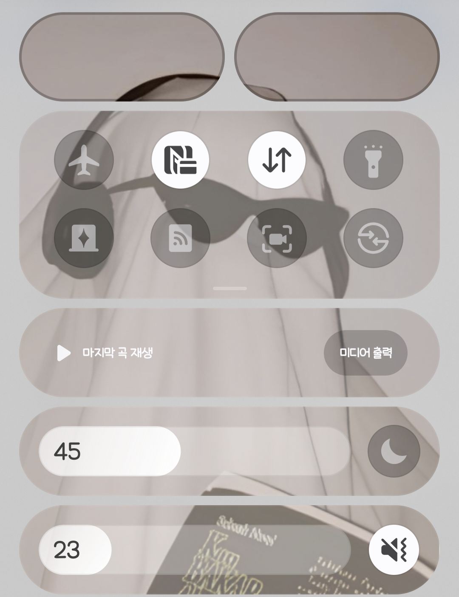
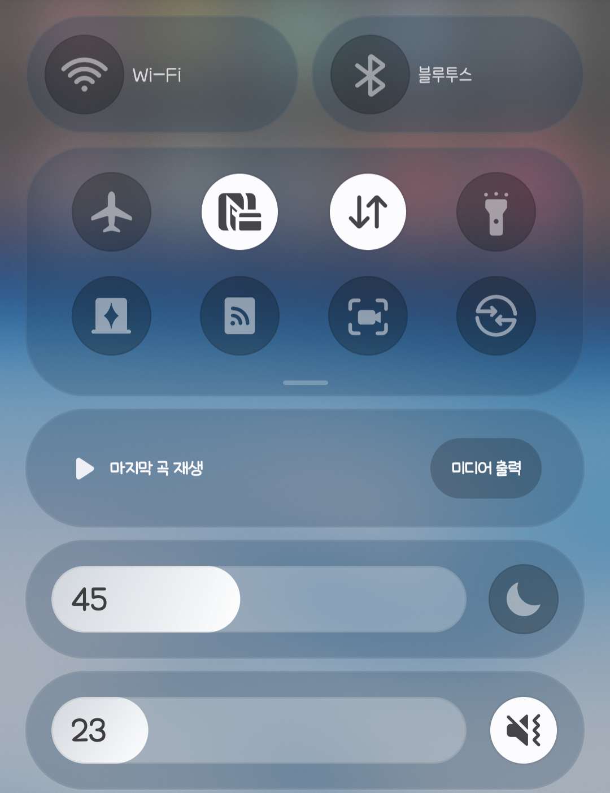

한국어
▾
한국어
English
日本語
Galaxy · GoodLock
SCENE
-
grid
시작하기


BEFORE
AFTER
SCENE-grid
—
한국어
▾
한국어
English
日本語
그리드 구성
세로
1
2
3
4
5
6
7
8
9
10
직접 입력
×
가로
1
2
3
4
5
6
7
8
직접 입력
만들기
초기화
처음으로
다음
→
이미지 가져오기
이미지를 드래그하거나
파일 선택
또는 Ctrl+V로 붙여넣기
처음으로
←
이전
다음
→
영역 선택
처음으로
←
이전
잘라내기 & 계속
→
분할 결과
←
이전
처음으로
ZIP 저장